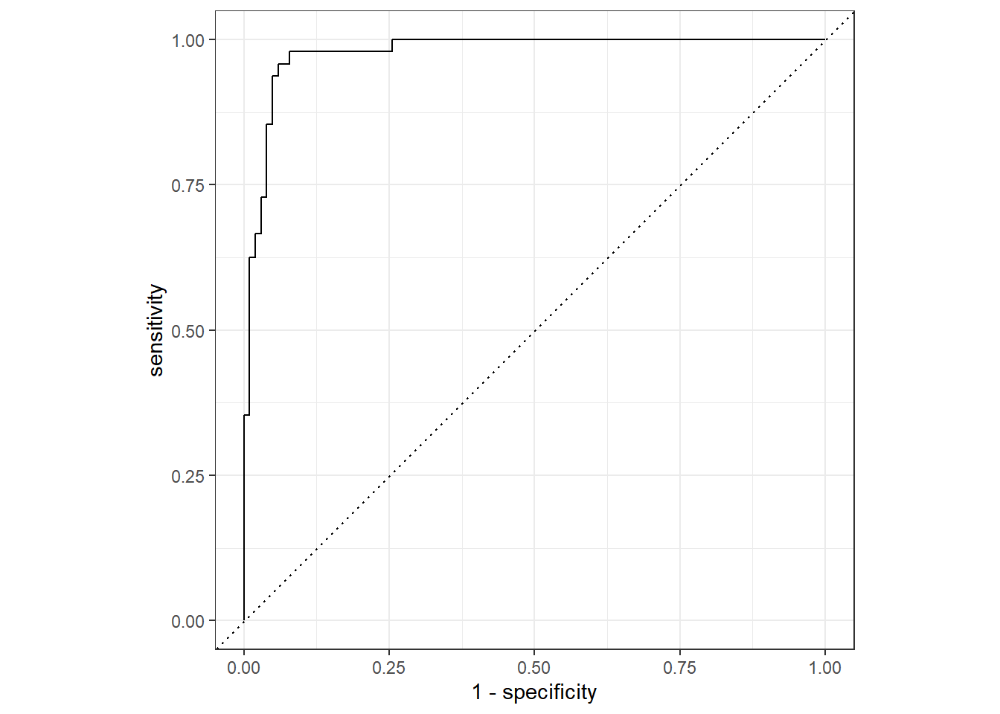
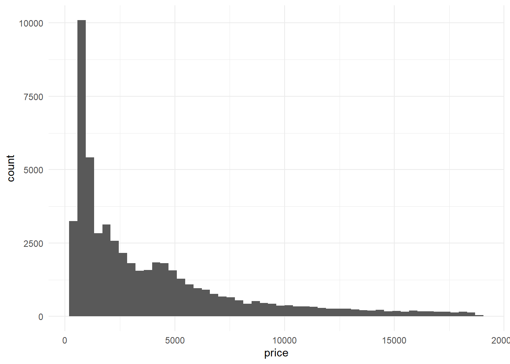
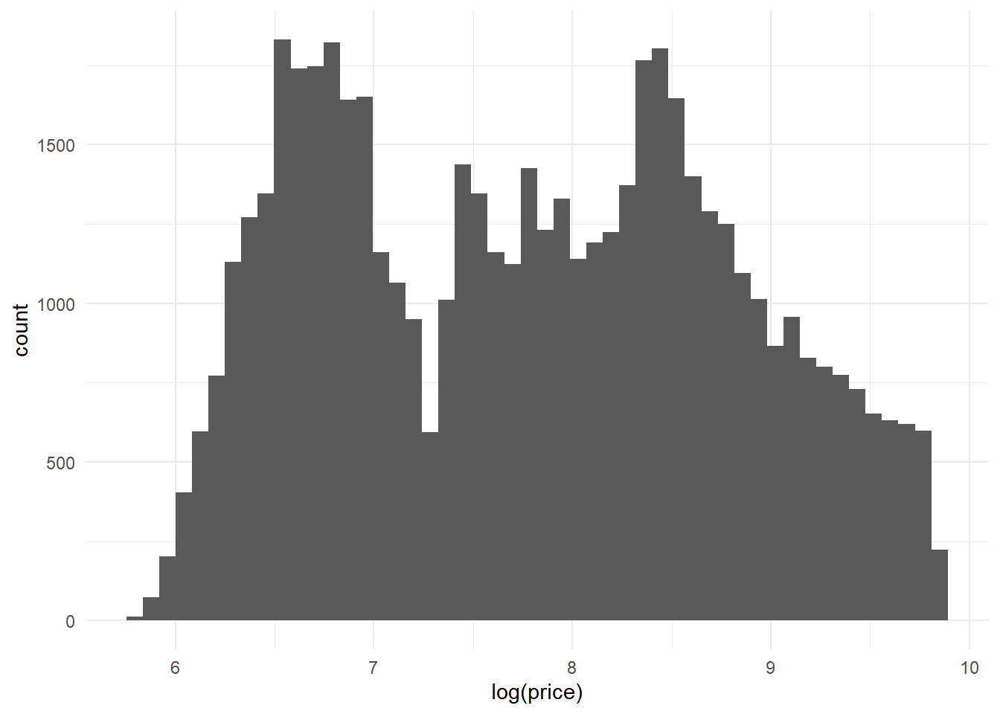
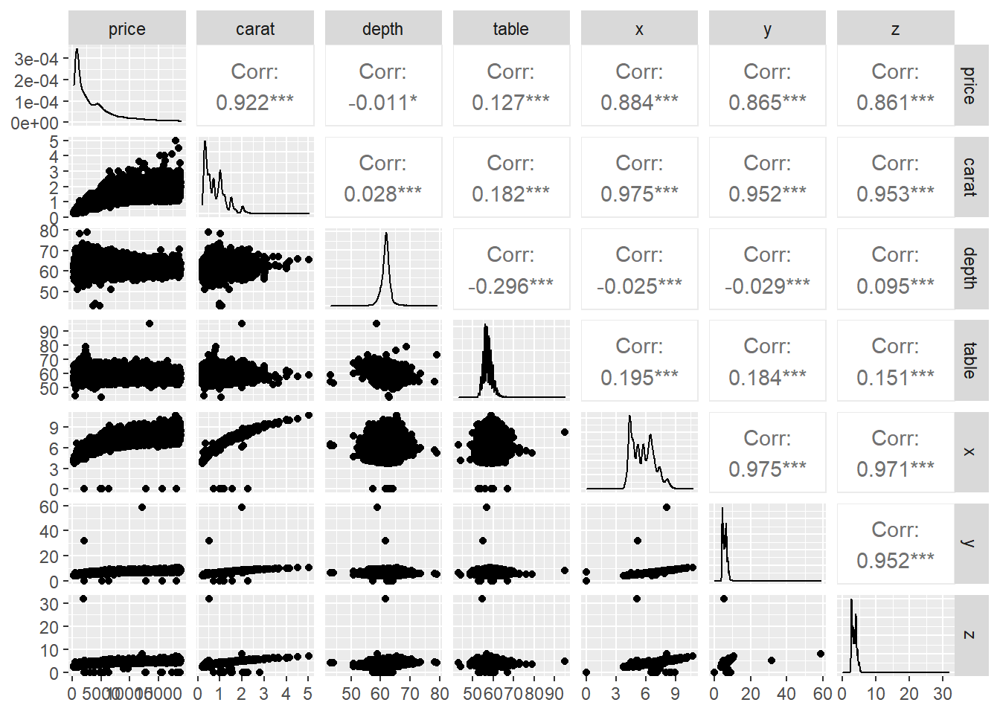
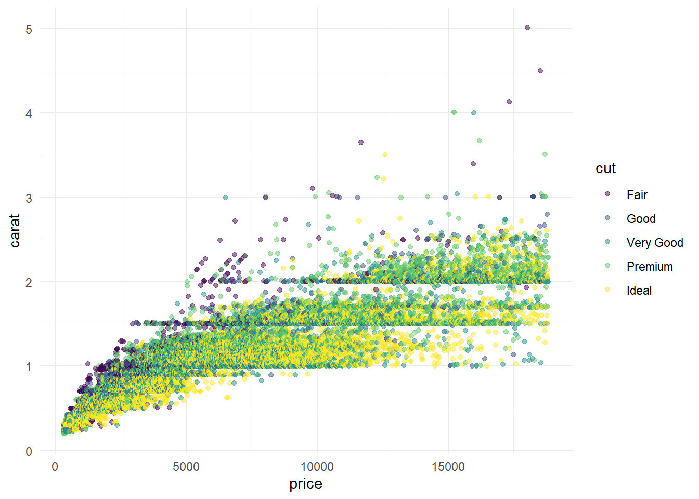
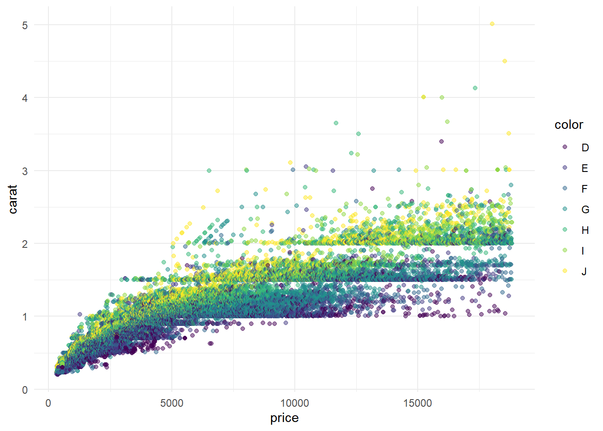
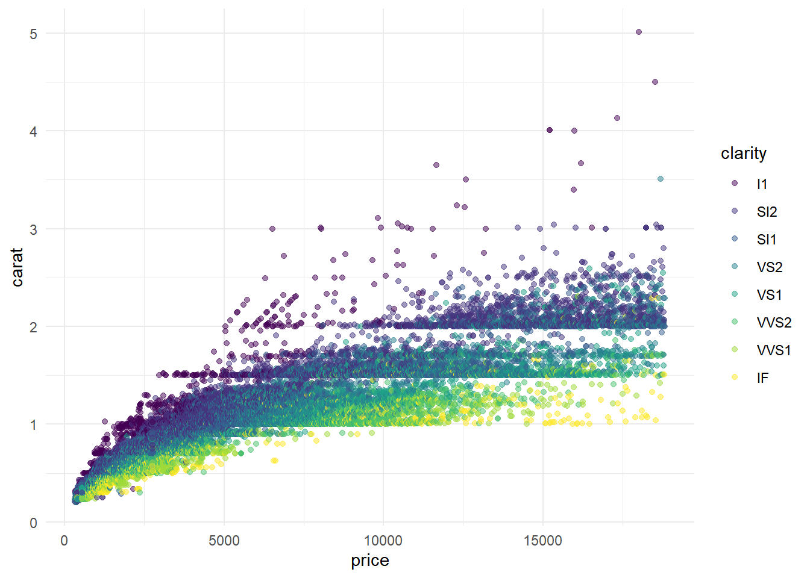
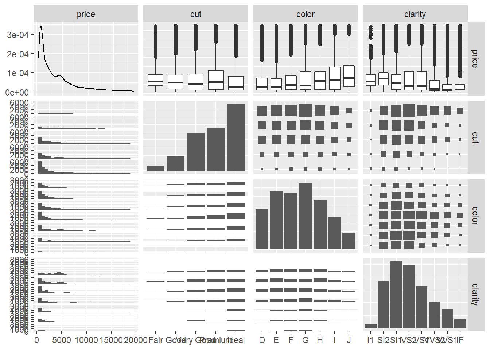
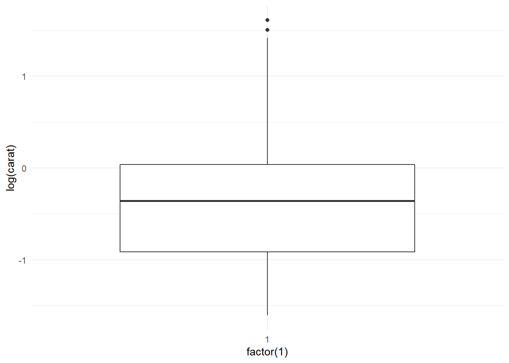

Chapter 5 Logistic Regression
5.1 Description
An approach for predicting a the probability that response value \(Y\) belongs to a particular category based on one or more predictor values \(X_1, X_2, ... X_n\). The probability will always lie between 0 (no chance) and 1 (absolute certainty) and can be given by the following logistic function for the case with a single predictor variable:
\[p(X) = \frac{e^{\beta_0 + \beta_1X}}{1 + e^{\beta_0 + \beta_1X}}\] where
\(p(X) = Pr(Y = category|X)\), which can be read as “the probability that \(Y\) is
category given \(X\).
Unlike a linear function, this logistic function will not indicate a probability of an observation belonging to a particular category as negative or greater than 1. Determining whether to treat a particular observation as belonging to a particular category can be made on the basis of the probability returned by this function. It may be reasonable to use a 50% threshold in many cases (\(p(X) > 0.5\)), but an analyst may want to be adjust this threshold to meet business needs. You may wish to raise the threshold to reduce false positive classifications or lower it to reduce false negative classifications.
5.2 How it Works
A careful observer may not some similarities in the exponents of the formula above and the linear formula discussed in previous chapters. A bit of manipulation yields:
\[\frac{p(X)}{1 - p(X)} = e^{\beta_0 + \beta_1X}\]
where the \(\frac{p(X)}{1 - p(X)}\) term is labeled as the odds of the event, such that an odds of \(1/4\) yields \(p(X) = 0.2\) and an odds of \(9\) yields \(p(X) = 0.9\). You can confirm this by noting that \(\frac{0.9}{1 - 0.9} = 9\). Taking the logarithm of both sides yields:
\[\ln{ \left( \frac{p(X)}{1 - p(X)} \right) } = \beta_0 + \beta_1X\]
The left-hand side of that equation is called the log odds or logit. Now, our equation looks eerily similar to the linear equation because, in fact, the relationship between “the log odds that the response falls into a certain category given \(X\)” and \(X\) is linear. That is, for one unit change in \(X\), the log odds that the response falls into the indicated category changes by a constant amount \(\beta_1\). This behavior can be extended to the case of multiple predictor variables in a manner analogous to what we have seen for Linear Regression:
\[\ln{ \left( \frac{p(X)}{1 - p(X)} \right) } = \beta_0 + \beta_1x_1 + \,... \, + \beta_px_p\]
This model can also be extended to the case where there are more than two response categories, known as a multinomial logistic regression model, like so (with a single predictor for simplicity):
\[\ln{ \left( \frac{Pr(Y=k|X)}{Pr(Y=K|X)} \right) } = \beta_0 + \beta_1X\] To do this,
given that there are \(K\) possible values for \(Y\), one possible \(K\) is chosen as the
default, or baseline value. Consider the example of a model to classify flower species
using the iris data set.
skimr::skim(iris)| Name | iris |
| Number of rows | 150 |
| Number of columns | 5 |
| _______________________ | |
| Column type frequency: | |
| factor | 1 |
| numeric | 4 |
| ________________________ | |
| Group variables | None |
Variable type: factor
| skim_variable | n_missing | complete_rate | ordered | n_unique | top_counts |
|---|---|---|---|---|---|
| Species | 0 | 1 | FALSE | 3 | set: 50, ver: 50, vir: 50 |
Variable type: numeric
| skim_variable | n_missing | complete_rate | mean | sd | p0 | p25 | p50 | p75 | p100 | hist |
|---|---|---|---|---|---|---|---|---|---|---|
| Sepal.Length | 0 | 1 | 5.84 | 0.83 | 4.3 | 5.1 | 5.80 | 6.4 | 7.9 | ▆▇▇▅▂ |
| Sepal.Width | 0 | 1 | 3.06 | 0.44 | 2.0 | 2.8 | 3.00 | 3.3 | 4.4 | ▁▆▇▂▁ |
| Petal.Length | 0 | 1 | 3.76 | 1.77 | 1.0 | 1.6 | 4.35 | 5.1 | 6.9 | ▇▁▆▇▂ |
| Petal.Width | 0 | 1 | 1.20 | 0.76 | 0.1 | 0.3 | 1.30 | 1.8 | 2.5 | ▇▁▇▅▃ |
If you are fitting a logistic regression to the iris data set to predict species, you
may set the baseline to be ‘virginica’. The choice of baseline is not important for
fitting the model, but it is important for interpreting the estimated \(\beta\)
coefficients, as \(Pr(Y = k|X)\) is read as the probability that \(Y\) is some value other
than the baseline \(k\) given \(X\) and \(Pr(Y=K|X)\) is the probability that \(Y\) is the
baseline value \(K\) given \(X\). In other works, the left-hand side is the _log odds of
\(k\) versus \(K\) given \(X\). This is an interesting point, but not entirely impactful, as
inferences or predictions based on this kind of model will be the same. Finally, this
expression can be extended to the case of multiple response and predictor variables like
so:
\[\ln{ \left( \frac{Pr(Y=k|X=x)}{Pr(Y=K|X=x)} \right) } = \beta_0 + \beta_1x_1 + \, ... \, + \beta_px_p\]
As an alternative to choosing a baseline category, the softmax coding of a logistic regression model treats all \(K\) classes symmetrically, such that the log odds ratio between one categorical value \(k\) and another \(k'\) can be represented as:
\[ ln{\left( \frac{Pr(Y=k|X=x}{Pr(Y=k'|X=x)} \right) = (\beta_{k0} - \beta_{k'0}) + (\beta_{k1} - \beta{k'1})x_1 + \, ... \, + (\beta_{kp} - \beta_{k'p})x_p} \]
Similarly to the linear case, the fit to a logistic model can be fit by an equation.
Instead of the least squares method, logistic models are fit by a maximum likelihood
method. In the simple case with one predictor and a binary response variable, the
_maximum likelihood function_ attempts to estimate \(\beta_0\) and \(\beta_1\) in such a
way that the predicted probability \(\hat{p}(x_i)\) matches the observed result as much as
possible. This means that, when \(Y\) == category \(\hat{p}(x_i)\) should be very close to
1 and when \(Y\) != category \(\hat{p}(x_i)\) should be very close to 0. This is
accomplished using a likelihood function of the form:
\[\ell(\beta_0, \beta_1) = \prod_{i:y_i = 1}{p(x_i)} \prod_{i':y_{i'}=0}{(1 - p(x_{i'}))}\]
5.3 Evaluating Validity
As can be seen from the underlying math, there are several assumptions inherent in a logistic regression model, regardless of the number of predictor variables or response categories:
Since the contribution by each set of predictors in each observation is calculated independently for each response, it is assume that each observation is independent.
Each predictor variable is assumed to be independent as well, that is, there is no collinearity between predictors. This can be detected through exploratory visualization using a scatterplot matrix, by calculating variance inflation factors via
car::vif, or by other methods.Just as with linear regression models, the goodness-of-fit can be negatively impacted by outliers or high-leverage points.
Finally, as has been demonstrated, logistic regression assumes a linear relationship between the log odds of the response belonging to a given category and the predictor variables. This can be a bit more complicated to assess than in the linear case, but a Box-Tidwell test (
car::boxTidwell) or scatter plot can help. These methods are demonstrated in the Example.
5.4 Evaluating Fit
5.4.1 Binomial Logistic Regression
There are a variety of methods for evaluating the fit of a logistic regression. Unlike a
linear regression on a quantitative response, the ultimate output of a classification
model (such as a logistic regression) cannot be easily characterized by how close the
individual predicted response is to an observed response, in general, because the
response either is or is not classified correctly. Instead, population-wide measures
such as a confusion matrix5 can be used. Here’s what that looks like for a binomial
logistic regression on the iris data set, determining whether a particular flower is
of the setosa species.
set.seed(6047)
# I'm going to start by switching around the classes on a few of the
# observations, just to make the confusion matrix more interesting.
# Otherwise, our classifier will be _too_ good.
skim(
iris_data
<- iris
|> mutate(
replace = sample(Species, n()),
Species = if_else(runif(n(), 0, 1) > .15, Species, replace),
setosa = factor(Species == "setosa", levels = c("TRUE", "FALSE")),
)
|> select(Species, setosa, matches("(Length|Width)$"))
)| Name | … <- NULL |
| Number of rows | 150 |
| Number of columns | 6 |
| _______________________ | |
| Column type frequency: | |
| factor | 2 |
| numeric | 4 |
| ________________________ | |
| Group variables | None |
Variable type: factor
| skim_variable | n_missing | complete_rate | ordered | n_unique | top_counts |
|---|---|---|---|---|---|
| Species | 0 | 1 | FALSE | 3 | ver: 52, vir: 50, set: 48 |
| setosa | 0 | 1 | FALSE | 2 | FAL: 102, TRU: 48 |
Variable type: numeric
| skim_variable | n_missing | complete_rate | mean | sd | p0 | p25 | p50 | p75 | p100 | hist |
|---|---|---|---|---|---|---|---|---|---|---|
| Sepal.Length | 0 | 1 | 5.84 | 0.83 | 4.3 | 5.1 | 5.80 | 6.4 | 7.9 | ▆▇▇▅▂ |
| Sepal.Width | 0 | 1 | 3.06 | 0.44 | 2.0 | 2.8 | 3.00 | 3.3 | 4.4 | ▁▆▇▂▁ |
| Petal.Length | 0 | 1 | 3.76 | 1.77 | 1.0 | 1.6 | 4.35 | 5.1 | 6.9 | ▇▁▆▇▂ |
| Petal.Width | 0 | 1 | 1.20 | 0.76 | 0.1 | 0.3 | 1.30 | 1.8 | 2.5 | ▇▁▇▅▃ |
# This recipe assumes that `Species` is predicted by all other values,
# creates interaction terms, and normalizes all the numeric predictors.
(iris_recipe
<- recipe(setosa ~ ., data = iris_data)
|> step_rm(Species) # no cheating!
|> step_interact(setosa ~ Sepal.Length:Sepal.Width)
|> step_interact(setosa ~ Petal.Length:Petal.Width)
|> step_normalize(all_numeric_predictors()))## Recipe
##
## Inputs:
##
## role #variables
## outcome 1
## predictor 5
##
## Operations:
##
## Variables removed Species
## Interactions with setosa, Sepal.Length:Sepal.Width
## Interactions with setosa, Petal.Length:Petal.Width
## Centering and scaling for all_numeric_predictors()# Specify the model
(iris_model
<- logistic_reg()
|> set_engine("glm")
|> set_mode("classification"))## Logistic Regression Model Specification (classification)
##
## Computational engine: glm# Bundle into a workflow (with fit)
(iris_workflow
<- workflow()
|> add_recipe(iris_recipe)
|> add_model(iris_model)
|> fit(data = iris_data))## ══ Workflow [trained] ═══════════════════════════════════════════════════════════════════════════════
## Preprocessor: Recipe
## Model: logistic_reg()
##
## ── Preprocessor ─────────────────────────────────────────────────────────────────────────────────────
## 4 Recipe Steps
##
## • step_rm()
## • step_interact()
## • step_interact()
## • step_normalize()
##
## ── Model ────────────────────────────────────────────────────────────────────────────────────────────
##
## Call: stats::glm(formula = ..y ~ ., family = stats::binomial, data = data)
##
## Coefficients:
## (Intercept) Sepal.Length Sepal.Width
## 1.9093 1.8128 -0.5969
## Petal.Length Petal.Width Sepal.Length_x_Sepal.Width
## 2.4619 7.7695 -0.2847
## Petal.Length_x_Petal.Width
## -9.3748
##
## Degrees of Freedom: 149 Total (i.e. Null); 143 Residual
## Null Deviance: 188.1
## Residual Deviance: 51.93 AIC: 65.93# Add predictions to the input data
iris_predictions <- augment(iris_workflow, iris_data)
# Create a confusion matrix (table)
(confusion_matrix
<- iris_predictions
|> count(setosa, .pred_class)
|> pivot_wider(names_from = .pred_class, values_from = n))## # A tibble: 2 × 3
## setosa `TRUE` `FALSE`
## <fct> <int> <int>
## 1 TRUE 45 3
## 2 FALSE 5 97In this binary case, the results can be classified in four different ways:
A true positive [\(TP\)] is a case where the observed value is ‘true’ and the predicted value is ‘true’.
A true negative [\(TN\)] is a case where the observed value is ‘false’ and the predicted value is ‘false’.
A false positive [\(FP\)] is a case where the observed value is ‘false’ and the predicted value is ‘true’.
A false negative [\(FN\)] is a case where the observed value is ‘true’ and the predicted value is ‘false’.
The counts of observations in these four ‘buckets’ can be used to calculate a variety of useful measures:
Precision [\(TP/(TP + FP)\)] is defined as the proportion of predicted positives that are actually positive. Also called positive predictive value. Answers the question: “Of all the flowers the model predicted to be setosa, what fraction actually were?”
Recall [\(TP/(TP + FN)\)] is defined as the proportion of positive results out of the number of samples which were actually positive. Also called sensitivity. Answers the question: “Of all the flowers that are actually setosa, what fraction did the model identify?”
Specificity [\(TN/(TN + FP)\)] is defined as the proportion of negative results out of the number of samples which were actually negative. Answers the question: “Of all flowers that were not setosa, what fraction did the model identify?”
Accuracy [\((TP + TN)/(TP + TN + FP + FN)\)] is the percentage of labels predicted accurately for a sample. Answers the question: “Of all the observations, what fraction were correctly classified?”
F Measure is a weighted average of the precision and recall, with best 1 and worst being 0.
Cohen’s Kappa is also used to evaluate inter-rater reliability, but if one considers the observed classification to be set by one rater and the predicted classes to be set by another rater, it can be usefully applied to classification models. When applied in this way, \(\kappa\) provides an estimate of how much better the observed accuracy (calculated as shown above) is than the expected accuracy (shown below). For example, if the expected accuracy is 50% (random chance) and the observed accuracy is 95%, \(\kappa\) will be 0.90. This is especially useful when the class distribution is skewed. \(\kappa\) can be calculated as shown:
\[\begin{align} observations &= n = TP + TN + FP + FN \\ accuracy_{obs} &= \frac{TP + TN}{n}\\ accuracy_{exp} &= \left(\frac{TP * FP}{obs} + \frac{TN * FN}{obs}\right) \div n\\ \kappa &= \frac{accuracy_{obs} - accuracy{exp}}{1 - accuracy_{exp}} \end{align}\]
As described in How it Works, a logistic regression model doesn’t exactly predict the class of each observation, but a set of probabilities that the observation belongs to each class. In the binary case, these are the probability that the observed class is ‘true’ ($p(X)$) and the probability that it is ‘false’ ($1 - p(X)$). By default, if \(p(X) > 0.5\), then the predicted class will be ‘true’. This threshold can be manipulated in order to further evaluate the model fit. By plotting the sensitivity against [1 - specificity] for a range of threshold values, you get a received operator characteristic (ROC) chart:
(iris_predictions
|> roc_curve(truth = setosa, .pred_TRUE)
|> autoplot())
The dotted diagonal line represents the probability of randomly guessing the correct class, so you want to be as far from that line as possible! For a theoretical model making perfect predictions, the curve would rise straight up the left side then across the top. The area under the curve (AUC) is a value between 0 and 1 that provides a quantitative measurement of the performance indicated by the ROC curve. The closer this value is to 1, the better the model has performed.
# Define a set of metrics using the `yardstick` package
eval_metrics <- metric_set(ppv, recall, specificity, accuracy,
f_meas, kap, roc_auc)
eval_metrics(
data = iris_predictions,
truth = setosa,
estimate = .pred_class,
.pred_TRUE # to be passed to `roc_auc()`
)## # A tibble: 7 × 3
## .metric .estimator .estimate
## <chr> <chr> <dbl>
## 1 ppv binary 0.9
## 2 recall binary 0.938
## 3 specificity binary 0.951
## 4 accuracy binary 0.947
## 5 f_meas binary 0.918
## 6 kap binary 0.879
## 7 roc_auc binary 0.9785.4.2 Multinomial Logistic Regression
When expanding our predictive value to predicting all classes of iris species:
# This recipe assumes that `Species` is predicted by all other values,
# creates interaction terms, and normalizes all the numeric predictors.
(iris_recipe
<- recipe(Species ~ ., data = iris_data)
|> step_rm(setosa) # No cheating!
|> step_interact(Species ~ Sepal.Length:Sepal.Width)
|> step_interact(Species ~ Petal.Length:Petal.Width)
|> step_normalize(all_numeric_predictors()))## Recipe
##
## Inputs:
##
## role #variables
## outcome 1
## predictor 5
##
## Operations:
##
## Variables removed setosa
## Interactions with Species, Sepal.Length:Sepal.Width
## Interactions with Species, Petal.Length:Petal.Width
## Centering and scaling for all_numeric_predictors()# Specify the model
(iris_model
<- multinom_reg() # Since there are three possible classes
|> set_engine("nnet") # Default for `multinom_reg`
|> set_mode("classification"))## Multinomial Regression Model Specification (classification)
##
## Computational engine: nnet# Bundle into a workflow (with fit)
(iris_workflow
<- workflow()
|> add_recipe(iris_recipe)
|> add_model(iris_model)
|> fit(data = iris_data))## ══ Workflow [trained] ═══════════════════════════════════════════════════════════════════════════════
## Preprocessor: Recipe
## Model: multinom_reg()
##
## ── Preprocessor ─────────────────────────────────────────────────────────────────────────────────────
## 4 Recipe Steps
##
## • step_rm()
## • step_interact()
## • step_interact()
## • step_normalize()
##
## ── Model ────────────────────────────────────────────────────────────────────────────────────────────
## Call:
## nnet::multinom(formula = ..y ~ ., data = data, trace = FALSE)
##
## Coefficients:
## (Intercept) Sepal.Length Sepal.Width Petal.Length Petal.Width Sepal.Length_x_Sepal.Width
## versicolor 0.3185672 -1.562520 -4.3193520 5.836776 14.121343 5.036399
## virginica 0.9500096 1.757604 -0.1347156 2.114512 4.658676 -1.056959
## Petal.Length_x_Petal.Width
## versicolor -20.916383
## virginica -5.287086
##
## Residual Deviance: 111.6001
## AIC: 139.6001# Add predictions to the input data
iris_predictions <- augment(iris_workflow, iris_data)
# Create a confusion matrix (table)
(confusion_matrix
<- iris_predictions
|> count(Species, .pred_class)
|> pivot_wider(names_from = .pred_class, values_from = n))## # A tibble: 3 × 4
## Species setosa versicolor virginica
## <fct> <int> <int> <int>
## 1 setosa 43 3 2
## 2 versicolor 3 45 4
## 3 virginica 2 4 44Here we see that our relatively “un-tuned” model does a good job of identifying iris species with just a few mis-classifications (due in large part to our ‘tweaks’ to the data set). Each row represents the true class of the flower while each column represents the predicted class of each flower. In a perfect world, we would only have numbers on the diagonal. We can examine the same metrics as we did in the binomial case:
eval_metrics <- metric_set(ppv, recall, specificity, accuracy,
f_meas, kap, roc_auc)
eval_metrics(
data = iris_predictions,
truth = Species,
estimate = .pred_class,
.pred_setosa, # to be passed to `roc_auc()`
.pred_versicolor, # / /
.pred_virginica # /
)## # A tibble: 7 × 3
## .metric .estimator .estimate
## <chr> <chr> <dbl>
## 1 ppv macro 0.880
## 2 recall macro 0.880
## 3 specificity macro 0.940
## 4 accuracy multiclass 0.88
## 5 f_meas macro 0.880
## 6 kap multiclass 0.820
## 7 roc_auc hand_till 0.9565.5 Example
5.5.1 Dataset
For our example logistic regression, let’s attempt to classify diamonds by expected
‘price class’ using the diamonds dataset.
| diamonds | R Documentation |
Prices of over 50,000 round cut diamonds
Description
A dataset containing the prices and other attributes of almost 54,000 diamonds. The variables are as follows:
Usage
diamonds
Format
A data frame with 53940 rows and 10 variables:
- price
price in US dollars (\$326–\$18,823)
- carat
weight of the diamond (0.2–5.01)
- cut
quality of the cut (Fair, Good, Very Good, Premium, Ideal)
- color
diamond colour, from D (best) to J (worst)
- clarity
a measurement of how clear the diamond is (I1 (worst), SI2, SI1, VS2, VS1, VVS2, VVS1, IF (best))
- x
length in mm (0–10.74)
- y
width in mm (0–58.9)
- z
depth in mm (0–31.8)
- depth
total depth percentage = z / mean(x, y) = 2 * z / (x + y) (43–79)
- table
width of top of diamond relative to widest point (43–95)
skim(diamonds)| Name | diamonds |
| Number of rows | 53940 |
| Number of columns | 10 |
| _______________________ | |
| Column type frequency: | |
| factor | 3 |
| numeric | 7 |
| ________________________ | |
| Group variables | None |
Variable type: factor
| skim_variable | n_missing | complete_rate | ordered | n_unique | top_counts |
|---|---|---|---|---|---|
| cut | 0 | 1 | TRUE | 5 | Ide: 21551, Pre: 13791, Ver: 12082, Goo: 4906 |
| color | 0 | 1 | TRUE | 7 | G: 11292, E: 9797, F: 9542, H: 8304 |
| clarity | 0 | 1 | TRUE | 8 | SI1: 13065, VS2: 12258, SI2: 9194, VS1: 8171 |
Variable type: numeric
| skim_variable | n_missing | complete_rate | mean | sd | p0 | p25 | p50 | p75 | p100 | hist |
|---|---|---|---|---|---|---|---|---|---|---|
| carat | 0 | 1 | 0.80 | 0.47 | 0.2 | 0.40 | 0.70 | 1.04 | 5.01 | ▇▂▁▁▁ |
| depth | 0 | 1 | 61.75 | 1.43 | 43.0 | 61.00 | 61.80 | 62.50 | 79.00 | ▁▁▇▁▁ |
| table | 0 | 1 | 57.46 | 2.23 | 43.0 | 56.00 | 57.00 | 59.00 | 95.00 | ▁▇▁▁▁ |
| price | 0 | 1 | 3932.80 | 3989.44 | 326.0 | 950.00 | 2401.00 | 5324.25 | 18823.00 | ▇▂▁▁▁ |
| x | 0 | 1 | 5.73 | 1.12 | 0.0 | 4.71 | 5.70 | 6.54 | 10.74 | ▁▁▇▃▁ |
| y | 0 | 1 | 5.73 | 1.14 | 0.0 | 4.72 | 5.71 | 6.54 | 58.90 | ▇▁▁▁▁ |
| z | 0 | 1 | 3.54 | 0.71 | 0.0 | 2.91 | 3.53 | 4.04 | 31.80 | ▇▁▁▁▁ |
5.5.2 Response Categories
Because I know I want to predict a ‘price class’ as a category instead of as continuous
value, I should try to determine how large the range of prices in each category should
be. Ideally, each price category should contain a comparable number of observations.
You’d also want to consider the business use case here, but since this is an example of
logistic regression modeling more than a primer on the diamond trade, let’s stick to
making roughly equal size groups. Let’s take a look a the distribution of price.
ggplot(diamonds, aes(price)) +
geom_histogram(bins = 50) +
theme_minimal()
Oh, well, that’s troublesome. Looks like we’ll need to log-transform price if we want
it to be evenly distributed across the range.
ggplot(diamonds, aes(log(price))) +
geom_histogram(bins = 50) +
theme_minimal()
That’s much better. Now, let’s identify the optimal interval size:
(tibble(buckets = seq_len(10))
|> mutate(.calc = map(buckets, ~ (
diamonds
|> mutate(bucket = cut_interval(log(price), .x))
|> count(bucket)
|> summarise(
mean_obs = mean(n),
sd_obs = sd(n),
min_obs = min(n),
max_obs = max(n),
range = max_obs - min_obs,
)
)))
|> unnest(.calc))## # A tibble: 10 × 6
## buckets mean_obs sd_obs min_obs max_obs range
## <int> <dbl> <dbl> <int> <int> <int>
## 1 1 53940 NA 53940 53940 0
## 2 2 26970 617. 26534 27406 872
## 3 3 17980 2635. 15241 20498 5257
## 4 4 13485 3230. 9581 16953 7372
## 5 5 10788 2991. 7144 13443 6299
## 6 6 8990 3078. 5200 13001 7801
## 7 7 7706. 2854. 3665 11568 7903
## 8 8 6742. 2491. 2618 9681 7063
## 9 9 5993. 2195. 1997 8258 6261
## 10 10 5394 2106. 1553 8400 6847It looks like 5 groups provides a good balance between the class sizes and the number of classes.
5.5.3 Correlations
Let’s start by establishing the correlations amongst the numeric variables in this dataset:
# Use a scatterplot matrix to identify correlations
columns <- c("price", "carat", "depth", "table", "x", "y", "z")
GGally::ggpairs(diamonds, columns = columns, progress = F)
We can make a few observations here:
The various size parameters:
carat,x,y, andzare all highly correlated, as may be expected.The shape of the distribution for
caratindicates that it may be best used when log-transformed (a left-biased distribution with a long tail).priceis very highly correlated withcarat, as might be expected from a layman’s understanding of how diamonds are priced. Bigger is better!
There are a few categorical variables as well that we should examine:
ggplot(diamonds, aes(price, carat, color = cut)) +
geom_point(alpha = 0.5) +
theme_minimal()
ggplot(diamonds, aes(price, carat, color = color)) +
geom_point(alpha = 0.5) +
theme_minimal()
ggplot(diamonds, aes(price, carat, color = clarity)) +
geom_point(alpha = 0.5) +
theme_minimal()
There appears to be some variation in price/carat based on these categorical
values, but it’s not extremely pronounced. The patterns are perhaps more easily
observable on the correlogram.
columns <- c("price", "cut", "color", "clarity")
GGally::ggpairs(diamonds, columns = columns, progress = F)
There appears to be some correlation between color, cut, and clarity, with the
most pronounced between color and cut. If we knew more about the diamond pricing
market, we might infer that certain cuts are preferred for certain colors of diamond,
but that’s just conjecture at this point. We’ll choose to add an interaction term for
color:cut, but there’s probably room for more experimentation on this point.
5.5.4 High Leverage Points
Recall, that high-leverage points are those observations where the observed values
fall well outside the range of the majority of the observed values. Since we only have
one continuous predictor variable (carat), any high-leverage points should be pretty
easy to find. (Note, recall that above we indicated a that we should log-transform
carat due to its distribution, so we should do that here as well).
ggplot(diamonds, aes(factor(1), log(carat))) +
geom_boxplot() +
theme_minimal()
Looks like there are two values for carat that fall way outside the range of the
majority of the values. Let’s find them:
(diamonds
|> arrange(desc(carat))
|> head(2)
|> pull(carat)
|> log()
|> round(2))## [1] 1.61 1.50Just for fun, let’s check the normal range for carat:
mean_carat <- mean(log(diamonds$carat)) |> round(2)
sd_carat <- sd(log(diamonds$carat)) |> round(2)
paste(mean_carat, "+/-", sd_carat)## [1] "-0.39 +/- 0.58"Those values are more than 3 standard deviations away from the mean of log carat. To
be on the safe side, let’s exclude any observations where log(carat) lies 3 or more
standard deviations from the mean.
5.5.5 Fit and Check
From exploring the dataset, I’ve decided to:
Log-transform
pricethen add each transformed price to one of 5 classes, depending on its value.Use
carat,cut,clarity, andcoloras predictor variables.Log-transform
caratprior to training the model.Remove observations where
log(carat)is 3 or more standard deviations away from the mean as high-leverage observations.Add an interaction parameter for
color:cut.
set.seed(800633)
# Modification to response variables should not be part of the workflow
mod_diamonds <- mutate(diamonds, price_cat = cut_interval(log(price), 5))
mod_diamonds_split <- initial_split(mod_diamonds)
# Specify the recipe, using the preparation steps described above
(log_reg_recipe
<- recipe(price_cat ~ carat + cut + color + clarity,
data = mod_diamonds)
|> step_log(carat)
|> step_filter(abs(carat - mean(carat)) < (sd(carat) * 3))
|> step_dummy(all_nominal_predictors())
|> step_interact(price_cat ~ starts_with("color_"):starts_with("cut_")))## Recipe
##
## Inputs:
##
## role #variables
## outcome 1
## predictor 4
##
## Operations:
##
## Log transformation on carat
## Row filtering using abs(carat - mean(carat)) < (sd(carat) * 3)
## Dummy variables from all_nominal_predictors()
## Interactions with price_cat, starts_with("color_"):starts_with("cut_")# Setup the model
(log_reg_model
<- multinom_reg()
|> set_engine("nnet")
|> set_mode("classification"))## Multinomial Regression Model Specification (classification)
##
## Computational engine: nnet# Bundle the recipe and model into a workflow, fit the model
(log_reg_workflow
<- workflow()
|> add_recipe(log_reg_recipe)
|> add_model(log_reg_model)
|> fit(data = training(mod_diamonds_split)))## ══ Workflow [trained] ═══════════════════════════════════════════════════════════════════════════════
## Preprocessor: Recipe
## Model: multinom_reg()
##
## ── Preprocessor ─────────────────────────────────────────────────────────────────────────────────────
## 4 Recipe Steps
##
## • step_log()
## • step_filter()
## • step_dummy()
## • step_interact()
##
## ── Model ────────────────────────────────────────────────────────────────────────────────────────────
## Call:
## nnet::multinom(formula = ..y ~ ., data = data, trace = FALSE)
##
## Coefficients:
## (Intercept) carat cut_1 cut_2 cut_3 cut_4 color_1 color_2
## (6.6,7.41] 14.77133 14.98926 4.106441 -3.569287 1.3668315 -2.011030 -2.848696 -0.03877709
## (7.41,8.22] 25.23687 32.12698 3.895234 -3.037634 0.5433772 -1.746210 -5.919968 0.17077340
## (8.22,9.03] 27.02919 46.56542 5.066777 -3.195376 0.9064511 -1.378375 -8.423160 -0.10510982
## (9.03,9.84] 21.85345 59.44266 7.601931 -4.935027 2.6772676 -1.714478 -9.793854 -1.65460281
## color_3 color_4 color_5 color_6 clarity_1 clarity_2 clarity_3 clarity_4
## (6.6,7.41] 2.1058502 0.06402263 -0.39966774 -0.6704520 7.806147 0.7449121 -0.2797165 0.6140537
## (7.41,8.22] 0.8627596 -0.49520457 0.08630286 -0.1890811 15.557550 0.3599709 -0.3223965 2.0028156
## (8.22,9.03] 0.6231886 -0.06351782 0.14218674 -0.8032102 21.285218 -1.0968904 1.0169551 0.8260622
## (9.03,9.84] 0.4438435 -0.44292761 0.43035152 -1.9180478 29.222613 -5.9869350 3.7545372 -1.1978647
## clarity_5 clarity_6 clarity_7 color_1_x_cut_1 color_1_x_cut_2 color_1_x_cut_3
## (6.6,7.41] -0.4483736 0.3632309 0.6256839 -1.888081 -5.772038 1.358870
## (7.41,8.22] -0.5171474 0.5503920 0.8737247 -6.663059 -3.452039 -2.487619
## (8.22,9.03] -1.2763157 0.0479671 0.6268565 -6.465506 -2.468129 -2.750882
## (9.03,9.84] 0.6341891 0.9096949 1.3602075 -12.137445 2.230262 -5.166862
## color_1_x_cut_4 color_2_x_cut_1 color_2_x_cut_2 color_2_x_cut_3 color_2_x_cut_4
## (6.6,7.41] -2.0890335 1.5252801 -3.0902028 0.8809812 0.3365358
## (7.41,8.22] 1.4108126 -0.9267690 -1.3385217 -2.0378257 1.5823993
## (8.22,9.03] -0.5081945 -0.7446158 0.7016114 -3.0166846 3.4134568
## (9.03,9.84] 0.2651442 1.2777073 0.2345068 -1.0267471 3.2055242
## color_3_x_cut_1 color_3_x_cut_2 color_3_x_cut_3 color_3_x_cut_4 color_4_x_cut_1
## (6.6,7.41] -0.7423168 -2.467593 0.3167168 0.4632866 1.991268
## (7.41,8.22] 0.6897983 -2.892903 0.5723597 0.5996124 2.938301
## (8.22,9.03] 2.5698649 -2.275121 1.6777016 1.3828688 2.764084
## (9.03,9.84] 2.3537641 -2.189823 2.9626609 1.7180650 3.093712
## color_4_x_cut_2 color_4_x_cut_3 color_4_x_cut_4 color_5_x_cut_1 color_5_x_cut_2
## (6.6,7.41] -4.183403 1.27063921 0.3216012 1.0628629 0.03580568
## (7.41,8.22] -4.353914 3.34454302 0.5546513 -1.2086507 0.78604881
## (8.22,9.03] -5.145836 3.72353328 1.4893282 -0.1674063 0.21505487
## (9.03,9.84] -2.133068 0.02659431 -0.1138213 -2.9317166 2.95632557
## color_5_x_cut_3 color_5_x_cut_4 color_6_x_cut_1 color_6_x_cut_2 color_6_x_cut_3
## (6.6,7.41] -1.2692962 -0.5879730 -0.3521551 0.02457326 -1.1774001
## (7.41,8.22] 1.7574518 -0.4392463 -4.4523729 2.43067566 0.3927754
## (8.22,9.03] 2.1639698 0.2834687 -2.1473629 1.11493030 0.1150996
## (9.03,9.84] 0.8466614 0.4828583 1.4863675 -2.46947278 3.4413292
## color_6_x_cut_4
## (6.6,7.41] 0.1110854
## (7.41,8.22] -0.3388539
## (8.22,9.03] 0.6050693
## (9.03,9.84] -0.7874513
##
## Residual Deviance: 30240.06
## AIC: 30584.06# Add predictions to training data
log_reg_predictions <- augment(log_reg_workflow, testing(mod_diamonds_split))
# Check performance using the same set of metrics as we did previously
eval_metrics <- metric_set(
ppv, recall, specificity,
accuracy, f_meas, kap,
roc_auc
)
eval_metrics(
data = log_reg_predictions,
truth = price_cat,
estimate = .pred_class,
`.pred_[5.79,6.6]`,
`.pred_(6.6,7.41]`,
`.pred_(7.41,8.22]`,
`.pred_(8.22,9.03]`,
`.pred_(9.03,9.84]`
)## # A tibble: 7 × 3
## .metric .estimator .estimate
## <chr> <chr> <dbl>
## 1 ppv macro 0.851
## 2 recall macro 0.842
## 3 specificity macro 0.961
## 4 accuracy multiclass 0.847
## 5 f_meas macro 0.846
## 6 kap multiclass 0.806
## 7 roc_auc hand_till 0.978The metrics look pretty good, let’s take a look at the confusion matrix…
(log_reg_predictions
|> count(price_cat, .pred_class)
|> pivot_wider(names_from = .pred_class, values_from = n))## # A tibble: 5 × 6
## price_cat `[5.79,6.6]` `(6.6,7.41]` `(7.41,8.22]` `(8.22,9.03]` `(9.03,9.84]`
## <fct> <int> <int> <int> <int> <int>
## 1 [5.79,6.6] 1546 454 NA NA NA
## 2 (6.6,7.41] 290 2636 292 NA NA
## 3 (7.41,8.22] 1 130 2680 233 NA
## 4 (8.22,9.03] NA NA 202 2984 191
## 5 (9.03,9.84] NA NA NA 267 1579All told, our classifier seems to be working OK. Most of the time, we’re correctly predicted the price category for each observation in the testing set, and when we mis-classify the price category we are (with one single exception) picking the price category above or below the true category.